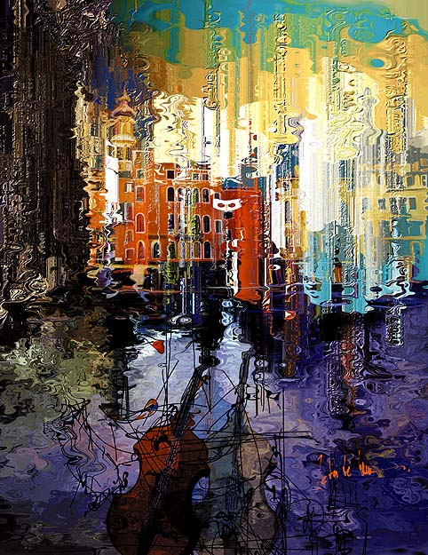

Peter Mc Lane
Venice
 |
| (1 of 11) |
 |
| (1 of 11) |
Peter Mc Lane, despite his name, is a Frenchman, born in Chamonix, France, in 1945. He grew up in Alsace. His first love was music, but with his discovery of the program Painter he turned passionately to digital art, and had his first digital art show in Paris in 1994. He says his technique "cannot be related to another," but confesses his respect and admiration for the traditional painters of the past, including the surrealists. He says he is influenced by Hieronymus Bosch, Tanguy, Dali and Max Ernst. He now lives in Vence on the south coast of the Riviera, where he shares his time between virtual art and old cars. He says in English, "My work is only through my imagination, no scanned images, only a white screen and using the stylus and a Wacom Tablet like a painter."